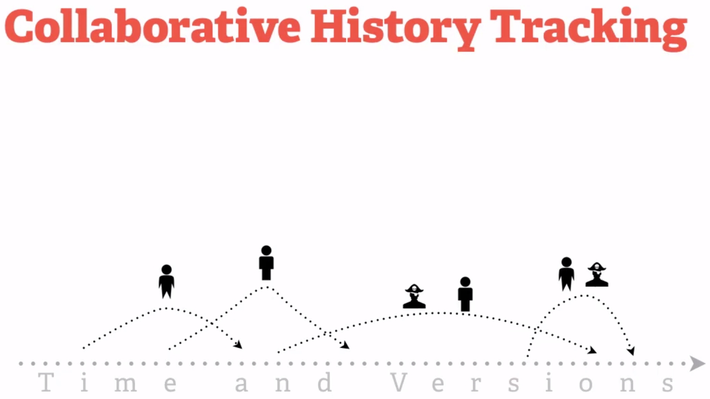

What is GitHub?
GitHub is a document collaboration system
Files can be shared with a team, worked on separately, and merged seamlessly.
Think about your daily tasks
- Create things
- Save things
- Edit things
- Save the thing again
Visualizing your file over time

This is easy for a single file and a single individual, but when it comes to collaborating on the same files it becomes difficult.
What would you do when you want to recover past versions of a file? Name them with dates? What about two people making changes on the same day? Would you include the person's name in the file name? What if there are two "John"s working on the project?

Even if you came up with a way to name the files that works, you'd still have to combine them into a final file. How would you know exactly where the two files differ or conflict?

GitHub simplifies this by providing version control on all your files.
GitHub also allows you to store a note along with each save, giving you space to write a brief summary of the changes. Maybe you just corrected spelling mistakes, but you may have also made a major revision that you want to record.

GitHub's version control system easily handles this interleaving of multiple people working on the same file.
- GitHub is a fast and modern implementation of version control.
- GitHub provides a history of content changes.
- GitHub facilitates collaborative changes to files.
- GitHub is easy to use for any type of knowledge worker.
More accurate model of collaboration might look something like this:
This is the fork and merge concept of GitHub.
- You fork, or copy the project
- You make changes to the files
- You merge your changes seamlessly back into the project